Five Nigh at Freddy's (FNAF)

Curiosidades de cada FNAF
FNAF 1
- Fue lanzado el 8 de agosto de 2014
- Scott Cawthon lo creó después de recibir críticas por sus juegos anteriores
- El diseño de la pizzería está inspirado en Chuck E. Cheese's
- Golden Freddy es un personaje secreto que aparece aleatoriamente
- La risa de la niña que se escucha es de la hija de Scott
FNAF 2
- Es una precuela del primer juego
- Introdujo la mecánica de la máscara de Freddy
- La Mordida del 87 ocurre en este juego
- Los Toy Animatronics tienen reconocimiento facial
- Puppet es el primer animatrónico poseído
FNAF 3
- Ocurre 30 años después del primer juego
- Springtrap es William Afton atrapado en el traje
- Los Phantom son alucinaciones
- Tiene múltiples finales
- Es el único juego con un solo animatrónico real
FNAF 4
- Ocurre en la mente de un niño
- Muestra la Mordida del 83
- Los animatrónicos son versiones pesadilla
- El protagonista es el hijo menor de William Afton
- El peluche de Fredbear es controlado por William
Línea Temporal Principal de FNAF
| Año | Evento | Detalles |
|---|---|---|
| 1973 | Fredbear's Family Diner abre | Primera ubicación con Fredbear y Spring Bonnie |
| 1983 | La Mordida del 83 | El hijo menor de William Afton muere en Fredbear's |
| 1985 | Los primeros asesinatos | William Afton comienza sus crímenes |
| 1987 | La Mordida del 87 | Incidente en la nueva Freddy Fazbear's Pizza |
| 1993 | Eventos de FNAF 1 | Michael Afton trabaja como guardia nocturno |
| 2023 | Eventos de FNAF: Security Breach | Gregory y Glamrock Freddy en el Mega Pizzaplex |
Ubicaciones Importantes
| Nombre | Aparición | Descripción | Estado Actual |
|---|---|---|---|
| Fredbear's Family Diner | Mencionado en FNAF 2 | El restaurante original donde todo comenzó | Cerrado después de la Mordida del 83 |
| Freddy Fazbear's Pizza (1983) | FNAF 2 | Primera versión de Freddy's con los Toy Animatronics | Cerrado por problemas de seguridad |
| Freddy Fazbear's Pizza (1993) | FNAF 1 | Versión más pequeña y deteriorada | Cerrado y abandonado |
| Circus Baby's Pizza World | Sister Location | Facility subterráneo con animatrónicos rentables | Abandonado después de accidentes |
| Fazbear's Fright | FNAF 3 | Atracción de horror basada en las leyendas | Destruido en un incendio |
| Mega Pizzaplex | Security Breach | Centro comercial moderno con temática de FNAF | Operativo |
Personajes Humanos Principales
| Nombre | Rol | Historia |
|---|---|---|
| William Afton | Antagonista Principal | Co-fundador de Fazbear Entertainment y asesino en serie. Posteriormente se convierte en Springtrap |
| Michael Afton | Protagonista | Hijo mayor de William que intenta detener los planes de su padre |
| Henry Emily | Co-fundador | Creador original de los animatrónicos y padre de Charlotte |
| Charlotte Emily | Víctima/The Puppet | Hija de Henry, primera víctima de William Afton |
| Elizabeth Afton | Víctima/Circus Baby | Hija de William, asesinada por Circus Baby |
| Gregory | Protagonista de Security Breach | Niño que sobrevive en el Mega Pizzaplex con ayuda de Glamrock Freddy |
Minijuegos Relevantes para la Historia
| Juego | Nombre del Minijuego | Revelación en la Historia |
|---|---|---|
| FNAF 2 | Take Cake to the Children | Muestra el asesinato de Charlotte Emily |
| FNAF 2 | Give Gifts, Give Life | Puppet da vida a los primeros animatrónicos |
| FNAF 3 | Stage01 | Muestra a Fredbear's Family Diner |
| FNAF 3 | Happiest Day | Las almas de los niños son liberadas |
| FNAF 4 | Fun with Plushtrap | Conexión con los experimentos de sonido |
FNAF en la Cultura Popular
Libros
- Trilogía Original:
- Five Nights at Freddy's: The Silver Eyes (2015)
- Five Nights at Freddy's: The Twisted Ones (2017)
- Five Nights at Freddy's: The Fourth Closet (2018)
- Serie Fazbear Frights (múltiples libros)
- Tales from the Pizzaplex (serie en curso)
Adaptaciones
- Película "Five Nights at Freddy's" (2023)
- Múltiples líneas de juguetes y merchandising
- Juegos de mesa oficiales
- Cómics y novelas gráficas
Impacto en Internet
- Millones de videos de teorías en YouTube
- Gran comunidad de fanart y cosplay
- Múltiples fangames inspirados en la serie
- Canciones y animaciones fan-made populares
¡Comparte tu Experiencia con FNAF!
Personajes de FNAF 1
| Imagen | Nombre | Historia |
|---|---|---|
| 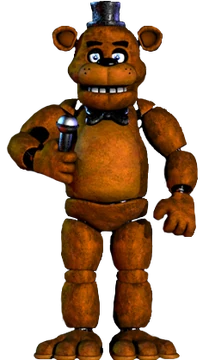 | Freddy Fazbear | Mi historia |
| 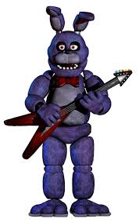 | Bonnie the Bunny | Mi historia |
| 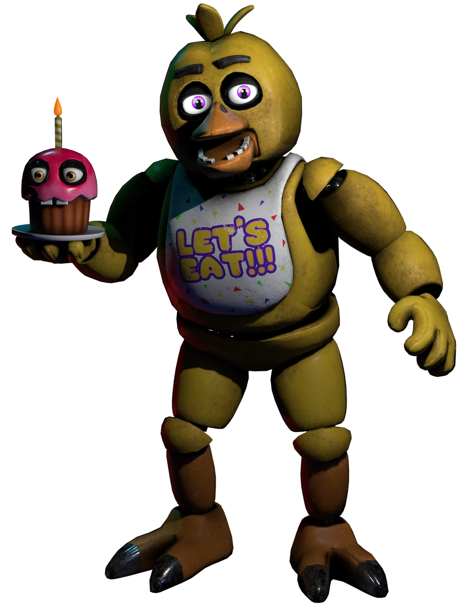 | Chica the Chicken | Mi historia |
 |
Foxy the Pirate | Mi historia |
Personajes de FNAF 2
| Imagen | Nombre | Historia |
|---|---|---|
| 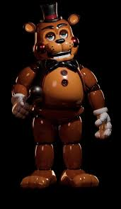 | Toy Freddy | Mi historia |
 |
Toy Bonnie | Mi historia |
 |
Toy Chica | Mi historia |
| 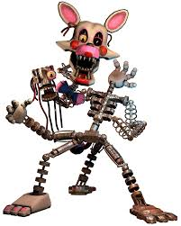 | Mangle | Mi historia |
| 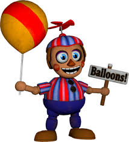 | Balloon Boy (BB) | Mi historia |
| 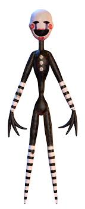 | The Marionette (Puppet) | Mi historia |
Personajes de FNAF 3
| Imagen | Nombre | Historia |
|---|---|---|
 |
Springtrap | Mi historia |
| 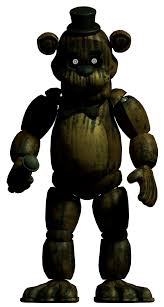 | Phantom Freddy | Mi historia |
 |
Phantom Foxy | Mi historia |
 |
Phantom Mangle | Mi historia |
Personajes de FNAF 4
| Imagen | Nombre | Historia |
|---|---|---|
| 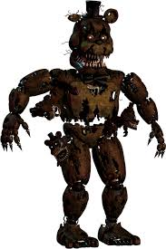 | Nightmare Freddy | Mi historia |
| 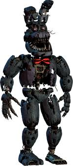 | Nightmare Bonnie | Mi historia |
 |
Nightmare Chica | Mi historia |
 |
Nightmare Foxy | Mi historia |
 |
Plushtrap | Mi historia |
 |
Nightmare | Mi historia |
Personajes de FNAF: Sister Location
| Imagen | Nombre | Historia |
|---|---|---|
 |
Circus Baby | Mi historia |
| 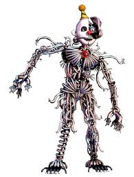 | Ennard | Mi historia |
 |
Funtime Freddy | Mi historia |
 |
Funtime Foxy | Mi historia |
Personajes de FNAF: Pizzeria Simulator
| Imagen | Nombre | Historia |
|---|---|---|
| 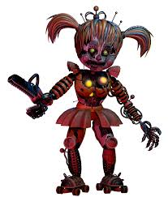 | Scrap Baby | Mi historia |
 |
Molten Freddy | Mi historia |
 |
Scraptrap | Mi historia |
 |
Lefty | Mi historia |
Personajes de FNAF Help Wanted
| Imagen | Nombre | Historia |
|---|---|---|
 |
Glitchtrap | Mi historia |
| 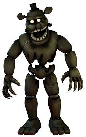 | Dreadbear | Mi historia |
| 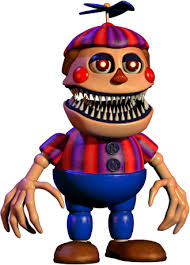 | Nightmare Balloon Boy | Mi historia |
Personajes de FNAF Security Breach
| Imagen | Nombre | Historia |
|---|---|---|
 |
Gregory | Mi historia |
 |
Glamrock Freddy | Mi historia |
 |
Roxanne Wolf | Mi historia |
| 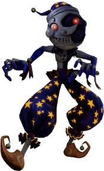 | Moondrop | Mi historia |